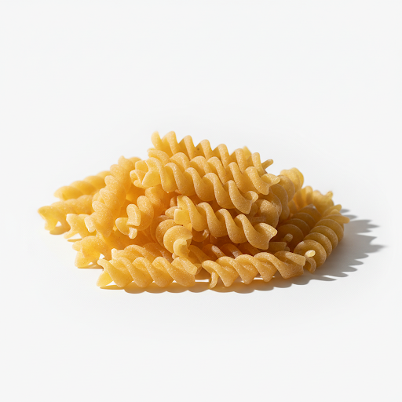
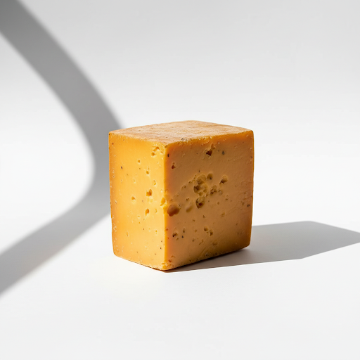
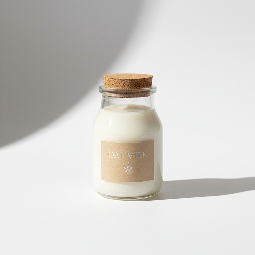
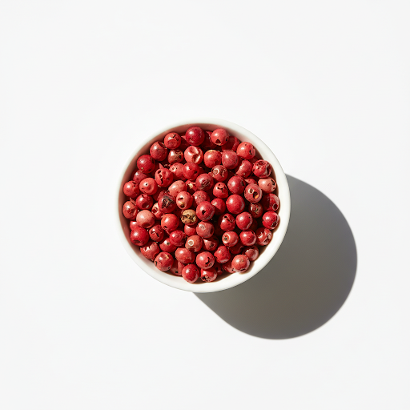

Bring a large pot of heavily salted water to a boil. Add the fusilli and cook according to package directions until al dente. Reserve 1 cup of pasta water before draining.
While the pasta boils, finely grate the three cheeses. Crushing the pink peppercorns lightly with the back of a knife or in a mortar and pestle.
Return the drained pasta to the pot over very low heat. Add a splash of oat milk and half the grated cheese. Toss vigorously, adding reserved pasta water a splash at a time until a creamy sauce forms.
Off the heat, fold in the remaining cheese. Divide into warmed bowls and scatter generously with the crushed pink peppercorns.